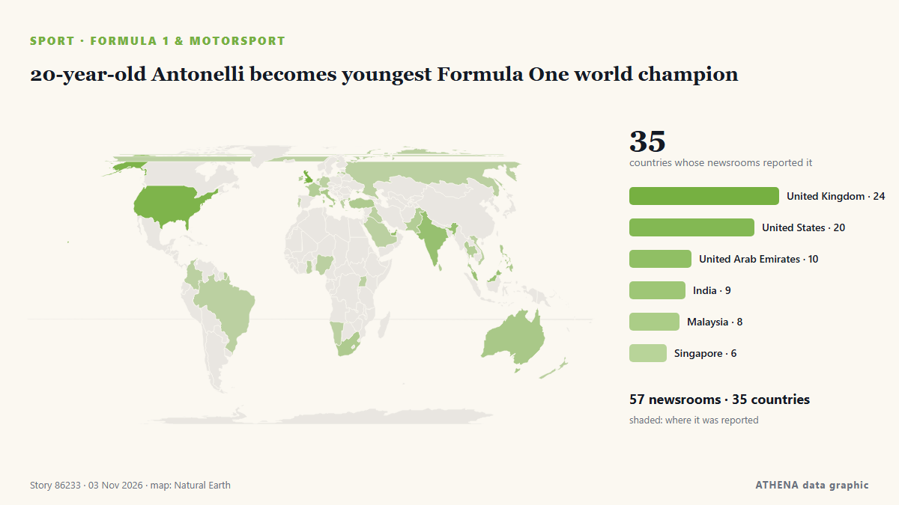

20-year-old Antonelli becomes youngest Formula One world champion

Mexico City is up next in the F1 season and Kimi Antonelli is on the brink of being crowned the youngest world champion in the sport’s history. von The National
Unabhängig gemeldet von 57 Medien in 35 Ländern seit dem 31. Okt., zuerst von CNA (Channel NewsAsia); die Berichterstattung flaut ab. Sport und Kultur werden ohne Risikobewertung abgelegt. Die Konfidenz liegt bei 91 % (hoch): 57 Medien bestätigen es unabhängig, bei einer mittleren Verlässlichkeit der Quellen von 73 %. Medien nach Land: Vereinigtes Königreich (13), Vereinigte Staaten (6), Singapur (4). Berichterstattung: 31. Okt. bis 1. Nov., 23 Stunden.
Was sich geändert hat: 6 neue Berichte von 4 Redaktionen in den 24 Stunden bis 3. Nov..
Erste Schlagzeile: Antonelli says title pressure made him more tense
Schlagzeilen werden auf Englisch angezeigt, wie veröffentlicht.
Auf einen Blick
Ausgewählt, bewertet und geschrieben nach der veröffentlichten Methodik von ATHENA. Kein Redakteur greift in einzelne Ereignisse ein. So entsteht ATHENA ›
| 31 Oct 23:37 UTC | 3 |
|---|---|
| 01 Nov 02:37 UTC | 1 |
| 01 Nov 05:37 UTC | 1 |
| 01 Nov 08:37 UTC | 2 |
| 01 Nov 11:37 UTC | 2 |
| 01 Nov 14:37 UTC | 2 |
| 01 Nov 17:37 UTC | 2 |
| 01 Nov 20:37 UTC | 36 |
| 01 Nov 23:37 UTC | 16 |
| 02 Nov 02:37 UTC | 11 |
| 02 Nov 05:37 UTC | 20 |
| 02 Nov 08:37 UTC | 7 |
| 02 Nov 11:37 UTC | 6 |
| 02 Nov 14:37 UTC | 5 |
| 02 Nov 17:37 UTC | 1 |
| 02 Nov 20:37 UTC | 0 |
| 02 Nov 23:37 UTC | 2 |
| 03 Nov 02:37 UTC | 1 |
| 03 Nov 05:37 UTC | 1 |
| 03 Nov 08:37 UTC | 1 |
| 03 Nov 11:37 UTC | 0 |
| 03 Nov 14:37 UTC | 0 |
| 03 Nov 17:37 UTC | 1 |
Warum diese Zahlen
Bedeutung
Risiko
Konfidenz
Die Berichterstattung – wer berichtete, und wann
Schlagzeile wie veröffentlicht · öffnet das Original- CNA (Channel NewsAsia) · SingapurAntonelli says title pressure made him more tense
- Motorsport.com · Vereinigte Staaten"I'll bombard myself with melatonin": Kimi Antonelli admits to driving "tense" and "tired" on cusp of F1 title
- Sky Sports · Vereinigtes KönigreichAntonelli feeling 'tense' amid effort to seal F1 title
- New Straits Times · MalaysiaAntonelli admits to feeling tense of eve of potential F1 title decider
- The National · Vereinigte Arabische EmirateWhat does Kimi Antonelli need to become F1 champion in Mexico? Driver rankings and prediction
- The Irish News (Belfast) · Vereinigtes KönigreichKimi Antonelli’s road from rookie crash in Monza to F1 glory in Mexico
- Gulf News · Vereinigte Arabische EmirateEverything record and milestone Antonelli could achieve with F1 title win in Mexico
- Indian Express · IndienFull list of Formula One World Champions as Kimi Antonelli closes in on 2026 title
- The Race · Vereinigtes KönigreichWhere Antonelli's 2026 will stand out among first-time F1 titles
- Sportstar · IndienFull list of F1 World Champions as Antonelli moves closer to historic title triumph
- Sportstar · IndienAntonelli on cusp of drivers’ title: Who is the youngest F1 World Champion?
- ABC News Australia · AustralienLive: High-speed wheel failure leads to huge crash that stops F1 race
- Sydney Morning Herald · AustralienMexican F1 GP LIVE: Kimi Antonelli wins world championship; Ferrari feud explodes over radio
- BBC News · Vereinigtes KönigreichAntonelli - the boy 'born in a garage' who became world champion
- Sportstar · IndienKimi Antonelli becomes third Italian to win F1 World Driver’s Championship
- Stuff · NeuseelandLawson goes from pits to points in Mexico; Antonelli crowned youngest champion
- Motorsport.com · Vereinigte StaatenKimi Antonelli becomes youngest world champion in F1 history
- Sky Sports · Vereinigtes KönigreichHistory made! Antonelli crowned youngest F1 world champion
- Gulf News · Vereinigte Arabische EmirateAntonelli on brink of history at Mexico City GP, needing only ninth-place finish to seal F1 title
- The Irish News (Belfast) · Vereinigtes KönigreichKimi Antonelli crowned F1 world champion after third-place finish in Mexico
- Motorsport.com · Vereinigte StaatenFive quick takeaways from historic Mexico GP
- CNA (Channel NewsAsia) · SingapurKimi Antonelli becomes youngest F1 champion at 20 years old
- The Irish News (Belfast) · Vereinigtes KönigreichKimi Antonelli wins F1 world title: The six races that proved pivotal
- ESPN · Vereinigte StaatenAntonelli crowned F1's youngest-ever world champion
- Sky Sports · Vereinigtes KönigreichAntonelli crowned world champion as Verstappen wins wild Mexico City GP
- MyJoyOnline · GhanaAntonelli becomes youngest F1 champion at 20 years old
- The Race · Vereinigtes KönigreichAntonelli clinches title as Ferrari mess helps Verstappen win
- Belfast Telegraph · Vereinigtes KönigreichKimi Antonelli becomes youngest-ever Formula One champion
- RTÉ News · IrlandHistory made as Antonelli crowned F1 world champion
- CNA (Channel NewsAsia) · SingapurAntonelli can be one of the greats and has nothing to prove, says Wolff
- Evening Standard (London) · Vereinigtes KönigreichKimi Antonelli wins historic first F1 title as Lewis Hamilton fumes over first-lap scuffle at Mexico City GP
- Motorsport.com · Vereinigte StaatenF1's youngest world champions
- Anadolu Agency (English) · TürkeiKimi Antonelli becomes youngest F1 world champion with 3rd-place finish in Mexico
- Sky Sports · Vereinigtes KönigreichHow Antonelli has rewritten Formula 1's record books
- CNA (Channel NewsAsia) · SingapurNorris says Antonelli deserves more credit for 'insane job' this season
- Free Malaysia Today · MalaysiaAntonelli becomes youngest Formula One world champion
- Motorsport.com · Vereinigte StaatenEmotional Kimi Antonelli left "speechless" by maiden F1 world title in Mexico
- New Straits Times · MalaysiaAntonelli makes F1 history as youngest-ever world champion at 20
- Evening Standard (London) · Vereinigtes KönigreichKimi Antonelli reacts to historic F1 title win as Lando Norris and Lewis Hamilton lead tributes
- Bangkok Post — page reader · ThailandAntonelli becomes youngest Formula One world champion